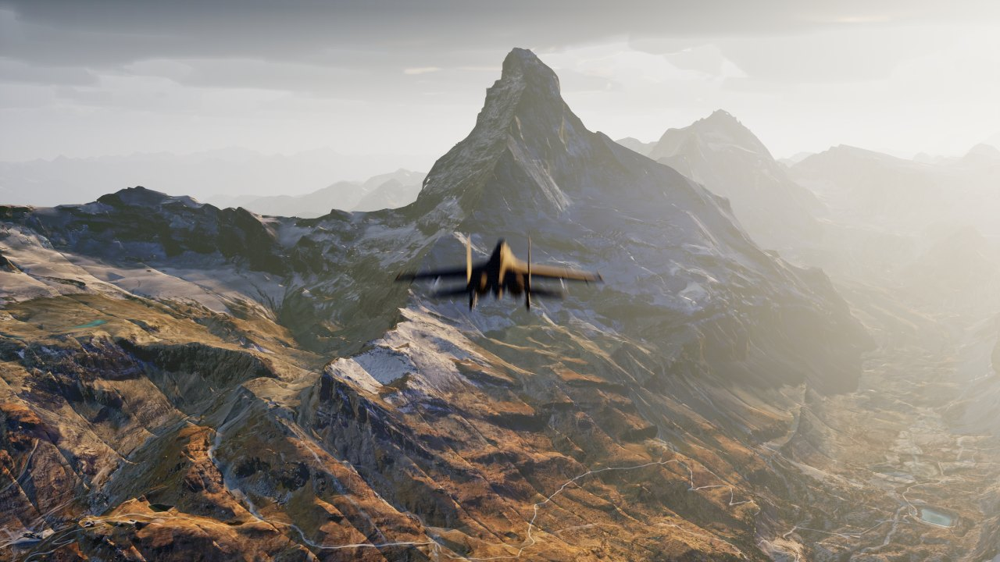
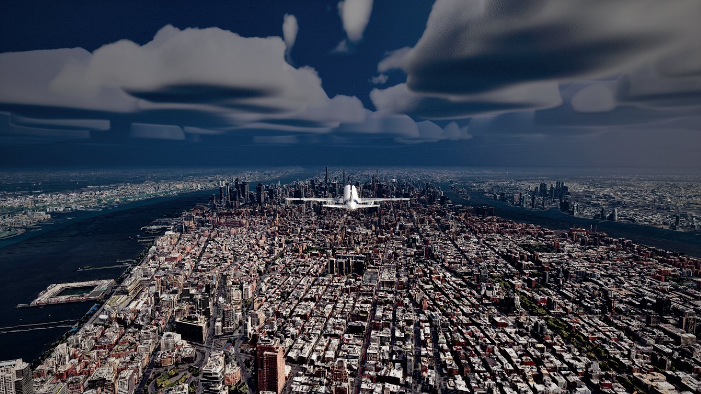

Dear Professor Backus and Dr. Bhattacharya,
I am pleased to submit the final deliverable for the FlightSim project. This email contains the
link to the source repository, the startup guide, and a set of preview frames rendered by the
system.
FlightSim is a research-grade flight simulation and synthetic-data system. A user types a plain-
English description of a flight (for example, "Cinematic: an A-4E Skyhawk banking low over the
Grand Canyon at 9,000 feet at golden hour, chase view"). The system turns that request into a
validated, reproducible scenario, flies it with the JSBSim flight-dynamics model, and renders it
in Unreal Engine 5.7 over real-world terrain (Cesium / Google 3D tiles). Each run produces image
frames or a video clip together with an annotated dataset (COCO, KITTI, YOLO, VOC and WebDataset
formats), packaged as a downloadable dataset.zip with a dataset card.
Key capabilities delivered:
• Natural-language prompt to validated scenario, with an AI auto-fix for vague or invalid prompts
• Physics from JSBSim, including weather, turbulence, wind, icing and failure scenarios
• Real-world terrain and cities (Grand Canyon, Yosemite, the Alps, New York, San Francisco, and more)
• Weather and lighting: time of day, clouds, rain, thunderstorms and tornadoes
• Multiple aircraft (J-11A, A-4E Skyhawk, Airbus A320, Boeing 747, Cessna 172) and camera views
(chase, cockpit, tower)
• A one-command Windows launcher and a browser-based web app — no command line needed in normal use
• A labelled-dataset pipeline with automatic verification of every run


1. Source repository (deliverable branch: phase-3-completed)
https://github.com/DhruvaValluru/flightsim/tree/phase-3-completed
Clone command:
git clone --depth 1 -b phase-3-completed https://github.com/DhruvaValluru/flightsim.git
Note: the repository is private. Please reply with your GitHub usernames and I will add
you as collaborators so the link opens for you.
2. Startup Guide (attached, PDF)
A step-by-step guide for a Windows computer: the exact software versions to install, the
one-command first start, pre-downloading terrain and scenes, getting updates, using the web
app, six ready-to-use cinematic prompts, and a troubleshooting table.
3. Preview frames (attached)
Six frames rendered by the system on the Windows test machine:
1. J-11A over the Matterhorn at golden hour (chase view, real terrain)
2. J-11A on a low pass over the desert (Grand Canyon preset)
3. Airbus A320 over New York City (Google 3D city tiles)
4. A-4E Skyhawk over the Alps
5. Boeing 747 flying through a thunderstorm
6. Cessna 172 near a tornado
After installing the prerequisites listed in Part 1 of the guide, the full system starts with
a single command in PowerShell:
cd $HOME\flightsim
& ".\Launch FlightSim.cmd"
The web app then opens at http://127.0.0.1:8008/. The first start takes 30–90 minutes while it
builds and downloads everything; later starts take a minute or two.
Thank you both for your guidance and support throughout this project. I would be glad to give a
live demonstration or answer any questions at your convenience.
Best regards,
Dhruva Valluru
FlightSim Project